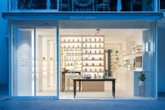

作家洪峰卖起服装 与妻子共创“珞妮民族手工”
云南会泽乡间的早春，在薄荷一样清新的空气中，3岁的小美女珞妮穿着妈妈设计的衣服，在草地上跑来跑去，“来拍我呀！” 珞妮妈妈、作家洪峰的妻子蒋燕推出的民族服装品牌——珞妮民族手工马上就要一岁了，这两天，她请来两个模特拍大片，而小珞妮就是编外的、最吸引眼球的小模特。日前，记者通过电话采访了他们。Kouichi Kimura: 滋贺乡下住宅
FORM/Kouichi Kimura architects 的新项目——“Courtyard House”，位于滋贺县的乡下地区，绿意延绵的田野与山林在望，两侧是旧式的农舍。Romo Jack 色彩斑斓的神奇之手
来自印尼的创意设计师Romo Jack通过独特的手法来表达生活中的万物，他的每一幅作品都有一双神奇的手在点缀，里面有各种活动、绘图、纹身、鲜花等等，这些充满了鲜艳色彩的图像组合成了一个活鲜的生命场景。Jack说这组系列挑战的不是对象排列而是找到令人兴奋的方式来表达视觉上的想法。一个赌徒和他的博物馆
最近，英国艺术家克里斯·奥菲利（Chris Ofili）的这幅《圣母玛利亚》（The Holy Virgin Mary, 1996）再次成为媒体焦点：画作即将在6月30日，伦敦佳士得上拍！将蔬果华丽丽滴穿上身！
Gretchen Röehrs 在自己的 Instagram 上 （Gretchen Röehrs） 晒出自己用蔬果做成的创意时装插画，纸上的那些女孩看上去好像真的把香蕉、甜豆、花菜、樱桃、洋葱都穿在身上，没想到那些食物的花纹和线条真是像极了时尚服装，非常可爱，而且创意十足呢！手工客[闪购频道]购买下单流程
闪购频道售卖的商品，只能用手机可以购买.手工客闪购频道，每天10点上线新商品，闪购的小编每天会精选出布艺，木艺，皮艺，发艺，刺绣，超轻粘土，滴胶，橡皮章，不织布，羊毛毡等diy材料包和手工工具分享给大家。频道所售卖的商品，都含有教程教学新手不用怕，只要您热爱手工来到手工客平台，都能成为心灵手巧的达人！
看十年老用户 如何设计艺术范儿冷柜
“海尔冷柜节能状元全球众创设计大赛”已经结束，三强选手也已荣耀诞生。为了更好地了解三强作品背后的故事，我们将对三强选手进行深度访谈，了解三强作品的诞生过程。今天我们先来感受一下《晶彩动物世界》作者“Uncle_Jack”的创作感悟。40岁女插画师的家，会画画的女人无论多大都这么有爱
Sandra Eterovic是一位插画艺术家，同时也是手工创意天才，她家里的大部分装饰、工艺品、抱枕都是经过她的巧手做出来的。这么爱手工的她也是个收集癖，只要是能用上的东西，她都当成宝贝似的收到家中。在她的精心布置下，这个两居室的小木屋变成了彩色的童话世界。伦敦公园内的临时办公树屋
围绕着伦敦哈克逊广场的一棵树，一个弹出式共用工作空间向当地的企业、创意工作者和社区团体开放了。这个被命名为TREExOFFICE的方案是park hack项目的第一个作品，建造意图是为了检验新的创新模式，来维持和增强公共开放空间的利用，并且直接供养当地环境，用项目产生的收益再次投资到哈克尼公园的建设中。废弃旧仔裤的DIY新创意
每个人或多或少都会有几条废弃的牛仔裤，不过大部分人都会选择扔掉吧。其实旧牛仔裤是特别好的DIY素材，小编小时候就用废弃的牛仔裤做过斜挎包，当时还找补鞋的大爷帮忙打铆钉。下面分享30例用牛仔裤DIY的物件，算是抛砖引玉。戛纳国际创意节：看技术宅如何玩转创意
一年一度的戛纳国际创意节即将落下帷幕，今年注册参加的代表团也再创新高，达到 1.35 万家。要知道在 2009 年，这个数字才刚过 3000。而在这场广告与营销界的盛会中，我们发现科技不仅在改变我们的日常生活，也能将创意玩得风生水起。就连《纽约时报》也不得不承认：“今年广告技术公司从边缘走向了中心舞台”。
这个19岁姑娘太牛了，保证惊艳到你
你见过这么美的意大利面，哦不，金发美女吗？你见过这么美的意大利面，哦不，金发美女吗？来自新西兰的19岁姑娘Kristina Webb最近红爆了Instagram，因为她的画实在是太有创意了！两百多万人关注她就是为了看她美美美的作品。
多功能电吹风梳子直发器卷发神器
十合一多功能造型整发器具有多个美发部件，它的热风可深入发根，即可快速吹干你的湿发，又可通过灵活的组合轻松造出各种飘逸、浪漫的发型，是家庭美发的好帮手，实际上就是将美发室搬回家，自己就是一个美发师，让你足不出户就可以打造一头漂亮百变的秀发，让你更自信更美丽。享受动手的乐趣
DIY已经逐渐成为一种休闲娱乐方式，因为它不只是一份礼物，更是一份情谊，你有没有想过孩子把自己做的零钱包、钥匙扣或者书包拿在手里的感觉？那应该是一种骄傲的幸福吧。下面的材料包，你拿到手只要缝就可以，超级方便，快享受一下自己动手的乐趣吧！不要世纪婚礼~~只想牵手旅行
Jeremy和他的女朋友Rachelle就要结婚了，他们计划了婚礼的一切事宜，包括地点、要邀请的亲友，还有很多零零碎碎的现实摆在他们面前。但他们不想把经历都放在置办婚礼上，一天他们突发奇想：何不在冰岛举行婚礼呢？一个设计师用32年的时间造出了一片荒野
自由职业者Piet Oudolf是荷兰创造自然美学景观的领军者。他的设计综合了生态与美学因素，把充满诗意的自然美学，通过理性严格的科学栽种环境实现。Piet Oudolf在他收拾出来的花园里住了32年。英食物艺术家别出心裁烤出超萌喵星人面包
“catloaf”在美国在线俚语词典里的意思是一只猫咪坐姿像一块面包。英国食物艺术家Lou Lou P巧用面团，将猫咪可爱坐姿烘焙成面包，萌态尽显，成为名副其实的catloaf。有一种生活叫U站
我用充电器的那些年，经历过一些这样那样的问题：插孔不够用、插头冒火星、充电器发热、插线太多太凌乱...这些小小的问题逐渐积累、变大，直到忍无可忍。有没有一款充电器，让这些问题成为历史？下面这款叫做U站兔子的商品或许会给我们答案。
